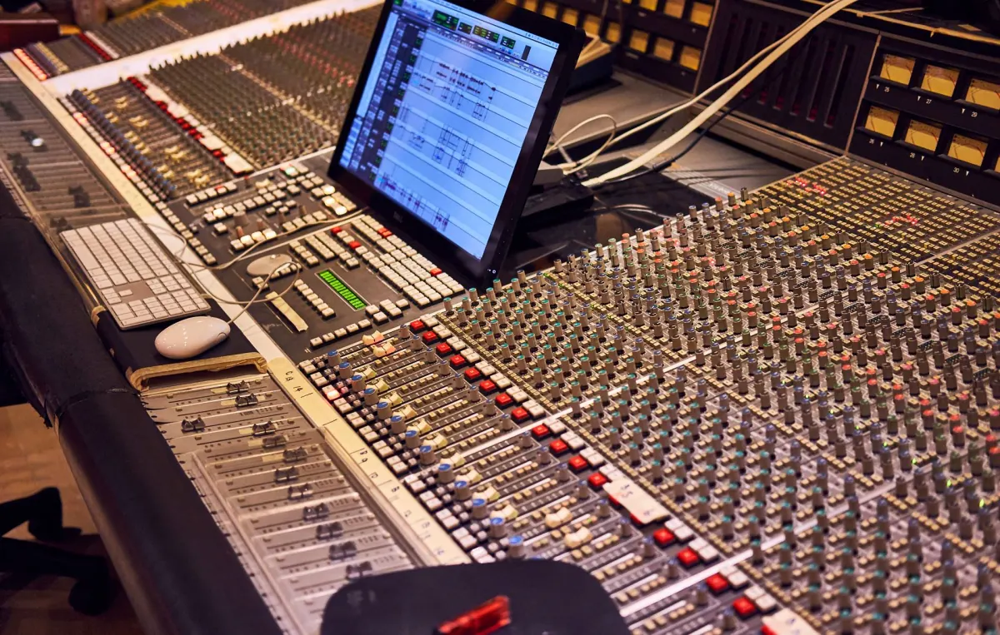
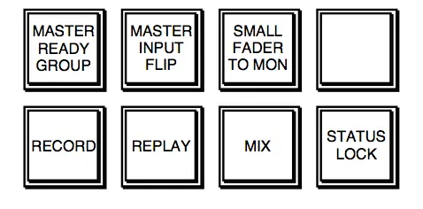
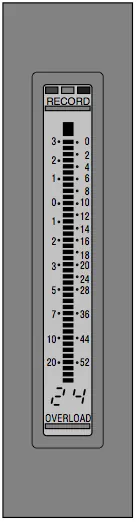
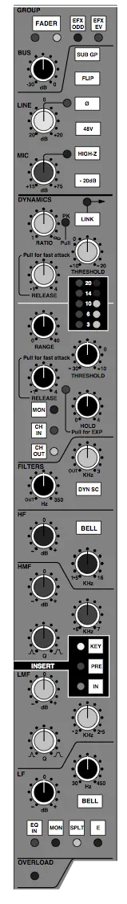
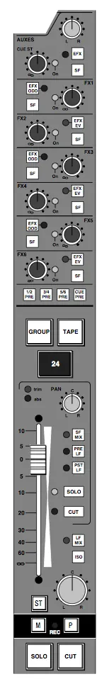
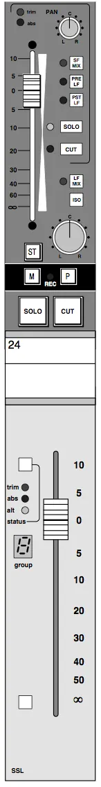
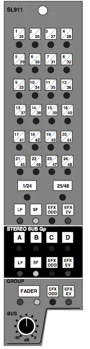

DAW的崛起帶來極大的便利，也大幅降低了音樂製作的門檻，但是SSL類比控台的經典音色以及實體操作界面的方便性，仍然是數位Plug-in所無法取代的。為了推廣類比控台的好聲音，從今天起我們招開了一個SSL讀書會，將以J9000說明書的順序與內容為主，重新編排並精簡內容後，以工程師的角度中文化說明書，並就我們的理解加上註解，如果您喜歡我們這個讀書會系列，歡迎您轉貼分享；如果內容有誤，也歡迎您來不吝指教，讓我們的讀書會內容更臻完美。
Console Overview

(照片攝於強力徵房)
SL 9000J系列是(當年)最新款的類比混音控台，除了加入許多新的功能外，也保留既有的操作界面SL 4000, 6000與8000系列，讓所有的錄音工程師都能快速上手。
除了大Fader (LF) Level以及Cut (就是Mute)可以自動化控制之外，以下功能也加入了電腦自動化控制
- Small Fader level
- Small Fader Cut
- EQ In/Out (EQ有沒有Bypass的意思)
- Insert In/Out(外部outboards有沒有Bypass的意思)
- Individual Aux On/Off switches
這些功能由(當年)最新款的自動電腦所控制，此電腦彩色螢幕、圖像畫界面與彈出視窗等功能。
SSL9000J系列可以從控檯電腦控制：隨機存取多軌錄音機(非線性的錄音機)、數位工作站(DAW)、隨機存取錄影機等等。
Master Status Switching

(狀態切換，位於控台中央偏左，Main Fader之上)
在RECORD以及REPLAY兩種模式下，大Fader是在監聽路徑(Monitor Path)之上，而小Fader則是位於通道路徑(Channel Path)
這與過往的SL 4000/6000/8000邏輯設計是不同的，以往必須多選擇VCA TO MONITORS or FADER REVERSE才能夠實現這樣的訊號流。
若是在RECORD以及REPLAY兩種模式下，多按下SMALL FADER TO MON. 則大小Fader的通道會對調，這提供了更多的便利性。
Metering

根據不同的型號，您的控台可能是VU表或是SSL的LCD 條型背光表，VU表的0可以調整為0dBu或是+6dBu，出廠預設值為+4dBu。若是PPM表的話可以在+16dBu到+24dBu之間選擇(Sony多軌盤帶機預設為+6dBFS)
Input/Output Module

輸入輸出模組跟4000G系列非常類似，但是也有許多強化過的部分，差異如下：
- 連續的麥克風Gain，可從15dB轉到75dB，伴隨一個-20dB的Pad按鈕，以及高阻抗(High-Z)切換
- 多軌道BUS音量微調旋鈕(Trim)改為放置到最上端
- Dynamics區域的電路是基於G系列所設計，並增加Peak Detect Option(拉起RATIO旋鈕開啟此模式)以及於Gate中增加HOLD(延時釋放)的功能
- 拉起HOLD旋鈕開啟Expander模式，否則預設為Gate
- 與G系列相同，有三個按鈕可以設定Dynamics in 的位置
MON: 插入Monitor Path (Post EQ)
CH IN: 插入Channel Path 且Pre-EQ
CH OUT: 插入Channel Path 且Post-EQ
- EQ帶有4-band，中頻部分可調整Q值，高低頻部分帶有Bell/Shelving，EQ模組電路是基於G系列的EQ所設計
- E按鈕按下去後可以切換到經典的242 E系列電路，特徵為中頻具有常數帶寬(Bandwidth)，所以Q會隨著Gain增加而增加。
- EQ in 為啟動EQ，可電腦自動化開關
- MON：EQ插入Monitor Path
- SPLT：可以把Filter置於INPUT之後

輔助發送(Auxiliary send, Aux)區塊包括了1組立體聲(叫做Cue)以及6組單聲道（FX1-6)，單按旋鈕可以開啟/關閉輔助發送軌道，這個功能是可以電腦自動化處理。黃色指示燈顯示目前軌道的工作狀態(On/Off)。Aux可以選擇大Fader以及小Fader作為訊號來源，當按下了SF，則訊號來源為小Fader，反之則為大Fader。 如果再按下1/2 3/4 5/6 或是CUE PRE按下後則該軌道為Pre Fader，反之則為Post Fader。
與SL4000系統相比，主要的改進來自於更便利的FX轉送分配系統-EFX。它實現任何兩個單聲道或是一個CUE立體聲直接轉送，而不需連結他們各自的Buss並且占用通道。
我們可以藉由按下EFX按鈕將特定訊號從FX上送入EFX，FX1/3/5 可以將訊號送入EFX Odd (指左聲道)，FX2/4/6可以送入EFX Even(右聲道)，Cue FX則是直接送入左聲道到EFX odd, 右聲道到EFX even.並且以左聲道:紅燈以及右聲道-綠燈的方式呈現
GROUP 與TAPE與錄音功能都是與SL4000相同。
小Fader與SL4000也是非常類似的，Fader以及CUT開關可被自動化控制。但Pan則是不像SL4000系列，總是關聯著小Fader，而是固定在電路之中。
小Fader可以藉由按下SF Mix 將訊號分配到Main Stereo Mix Bus.
一般來說，在混音狀態(MIX)或是錄音(RECORD)/回放(REPLAY)結合小Fader到監聽(SMALL FADER TO MON.)狀態下，則小Fader訊號源為監聽輸入(Monitor input)。
一般情況下，在錄音(RECORD)/回放(REPLAY)下，訊號源為通道輸入(Channel input)。
但是以上的訊號路由，可以被PRE LF/PST LF覆寫，當打開PRE LF，小Fader訊號將直接由通道訊號轉送，且緊鄰於INPUT之後（即訊號處理之前)。PST LF則為Post 大Fader
小Fader具有自己的自動化開關與LED指示燈。

在小Fader之下的則是大Fader的Pan，它總是與大Fader關聯著。
在大Fader的CUT按鈕可自動化控制，這個與其他全部的通道自動化開關物件可利用M (Match)以及P (Play)以及ST (Status)開關做運用，更多資訊請參考J9000電腦系統使用手冊。
與小Fader的Solo相同，大fader的Solo開關可以扮演破壞性獨奏、Post Pan Listen (AFL)、pre-fade listen (PEL)、或是前置獨奏等功能(就是這軌AFL其他人Dim的功能)。不同的Solo功能可以從控台中央區域做切換，包括SOLO CLEAR, ALT (所有Solo開關相互關聯)、FLEET (短暫開啟)，或是 SOLO LINK（大小Fader Bus）
大Fader具備VCA（步進馬達帶動)，相關功能請參考J9000電腦使用手冊。
大Fader可以借由群組功能彼此關聯八個Fader，請在控台中央區域選擇HARD GROUP SETUP，短壓按鈕可以增加大Fader旁的七段顯示器數字，長壓則為減少。

在Channel Strip中，有四種可能的輸出路徑
- 主立體聲混音匯流排(Main Mix Stereo Bus)
- 四個立體聲次群組匯流排 ABCD (Subgroup Busses)
- 48軌多軌(這邊是mono)匯流排
- 通道的群組輸出
我們可以藉由按下LF MIX 或是SF MIX 將大小Fader的訊號自送到主立體聲匯流排。
我們可以從大小Fader（Post Pan) 或EFX匯入訊號到次群組匯流排以及多軌匯流排(LF及SF兩個按鈕只能擇一，另一個會自動跳起來)。如果只有按下一個EFX則會傳送ODD/EVEN的單聲道，若是兩個一起按下則是傳送立體聲到輸出匯流排。這樣我們可以重新路由(Re-routed)任意兩個輔助轉送(Aux Send)到多軌輸出或是立體聲輸出，使得大部份的分軌混音不需要使用到小fader。
48軌多軌路由一般是藉由1-24/25-48 Bank選擇輸出，且一般訊號都是來自於小Fader （除非你按下了Record/Replay+Small Fader to Mon)
次群組匯流排本身是沒聲音的(除非你按下了按鈕)。次群組匯流排訊號來源一般是多軌匯流混合，但是可以藉由按下FADER或是EFX ODD/EVEN將訊號取代為Post-Fader
Centre Section
在J9000的中央控制區域，邏輯上分成兩個區域，一個在左邊，有兩個面板提供主要控制與聲音的相關功能，如：console status switching, main outputs and monitoring, subgroup and auxiliary masters, meter switching, talkback, FX and cue send masters, echo returns, oscillator等等.，在此區域下方提供了八個主控Fader。
中央控制區的右邊，有一個大的彩色螢幕與一個透明機殼可以控制J系列的電腦。還有一個飛梭可以控制標準走帶系統(Transport)，五個即時位置按鈕以及一個時間顯示器提供了機器控制的需求。一支筆與觸控面板提供了輸入界面。
本頁只是對中央區域做簡單的介紹，更多資訊請參考J系列電腦手冊
Master Audio Facilities
SL 9000J主聲音設備採用全新設備達到超高效能、低雜訊、高頻寬、低失真。控制器除了提供了G系列所有的功能之外，還加上了輔助發送與次群組匯流排。
返送與外部訊號系統大幅優化與改善，並且加入了新的SOLO模式。
控台提供了四軌含Fader與壓縮器的主輸出，且提供了Pre Fader插入功能(可以用Patchbay把outboards 在總線上insert進來的意思)。壓縮器則與G系列完全相同。
若選擇了KEY，則會直接Bypass insert部分，將訊號Return回來。
主Fader有他自己的燈有他自己的LED燈與按鈕。
左右聲道主輸出的訊號來自於console-wide busses。如果LCR Pan 的選擇是適當的，則通道訊號可以直接送到中央匯流。
四個立體聲次群組匯流排的訊號可以重新路由回LR或是MS並允許四通道混合建立。MS訊號來自於所選的次群組匯流排之加總。
主監聽輸出是一個四通道、可在監聽訊號強度前切換插入點，並符合杜比音效規範。提供兩對近場監聽輸出(使用MINI A/B按鈕)
一般狀況下，監聽的訊號來自於桌面主輸出，但是可以藉由按下EXT1/2兩個按鈕來切換輸入源。外部訊號源是可以完全獨立的，這點不像SL4000系列那樣按鈕會彼此關聯。
輔助匯流排輸出只提供LEVEL控制。
錄音室監聽系統已經被大大的擴展，提供了三個立體聲Foldback輸出以及一組立體聲錄音室揚聲器(Loudspeeaker)輸出，且各組分別提供了輸出控制以及可以切換訊號源1、訓好源2、外部訊號元任一組，或是上述來源混合。而Foldback輸出一般是被送到Stereo Cue output (Patchbay上面)。
四個立體聲Echo Return則是非常類似SL4000系列，伴隨增加路由切換到主輸出上，其中STUDIO訊號把訊號送到Foldback輸出，而不是輔助輸出。
振蕩器與Talkback LEVEL控制則是非常類似於SL4000系列。
本說明書版權歸Solid State Logic, Oxford, England所有，中文化僅供技術交流與強力錄音室內部使用，禁止用於商業用途。
PDF版：點我下載
下一篇：SSL說明書導讀-Section II: Basic Routing and Signal Flow （上）錄音篇
責任編輯：Hikari
技術顧問：Ken